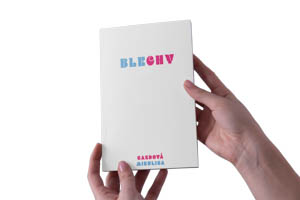
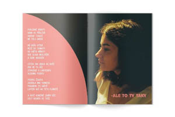
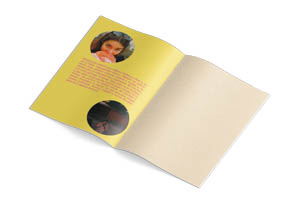
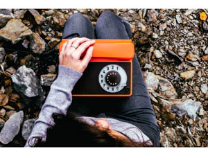

Fotografie
Kytice 2021
Fotokniha s inscenovanými fotografiemi zaměřenými na pohádky, vznikla jako maturitní práce. Kniha obsahuje fotografické zpracování balad z knihy Kytice od Karla Jaromíra Erbena. Každá série se nese v duchu balady, kdy si udržují jednotný vizuál a koncept.
Text k maturitní práci Text k maturitní práci


Blechy 2020
Můžete jet tolikrát tou stejnou šalinou a říkat si, že už jí nikdy nepojedete znovu. Můžete se tolikrát smát, lhát, plakat, milovat, umírat a myslet si, že takhle jste se cítili poprvé a naposledy. Že všechno má svůj začátek a konec. Taky jsem si to myslela, a tak jsem svoje pocity začala psát. Chvilku mi to trvalo, ale potom mi rázem došlo, že začátek a konec znamená to samý, že oba dva jsou stejně veselý, prolhaný, uřvaný, milující a mrtvý. Že zase jedu tou stejnou šalinou. Kniha vznikala během prvního nouzového stavu v Čechách, a tak se autor snažil vnést do téhle doby radost. Proto si vizuál knihy hraje s barvami a fonty, které zaujmou i pobaví. Hlavní inspirací byla autorovi padesátá až osmdesátá léta. Fotografie v knize byly zpracovány formou analogové fotografie, aby dodaly na dobové věrnosti.
Barbora Gazdová
  
Fantazie 2019
Fantasie je cyklus inscenovaných fotografií, jež si divák prohlíží, zkoumá či domýšlí. Jednotlivé série dodávají základní konstrukci příběhu opletenou záhadou a je na divákovi, jak si daný příběh doplní a vysvětlí. Proto může vznikat nekonečně mnoho dalších variant příběhu. Proto má každá série své vlastní specifické pojetí vizuálu a formátu.
